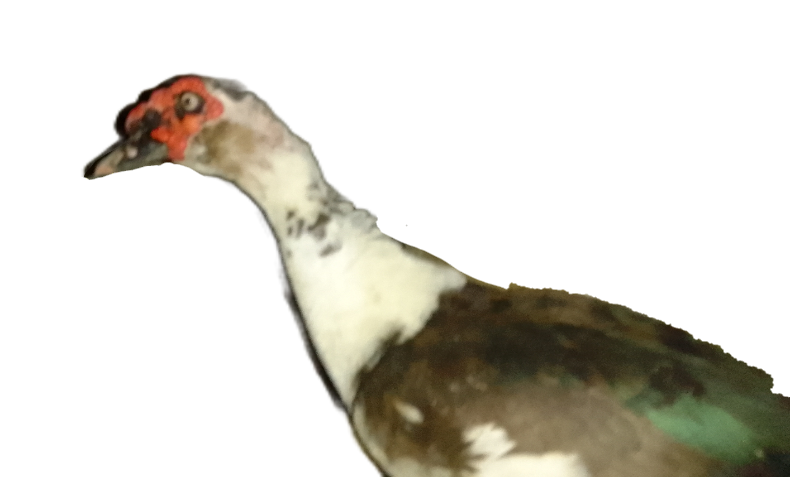
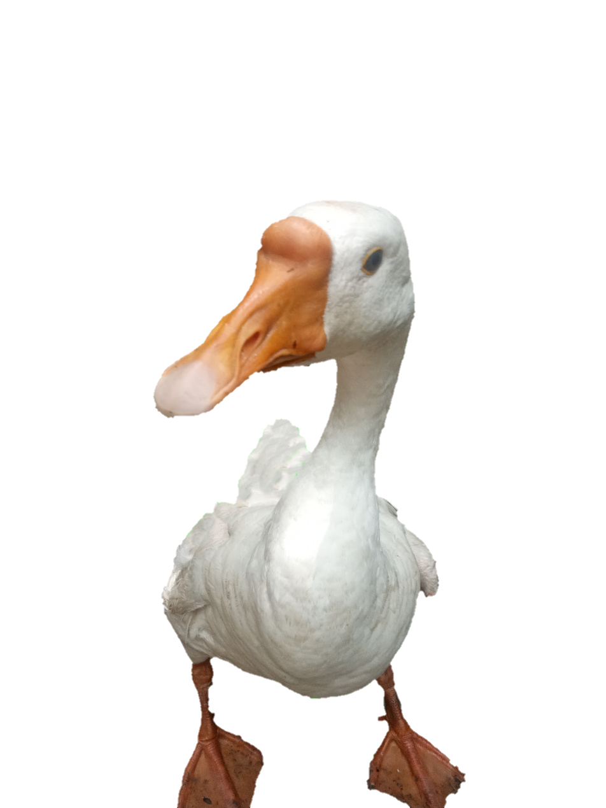
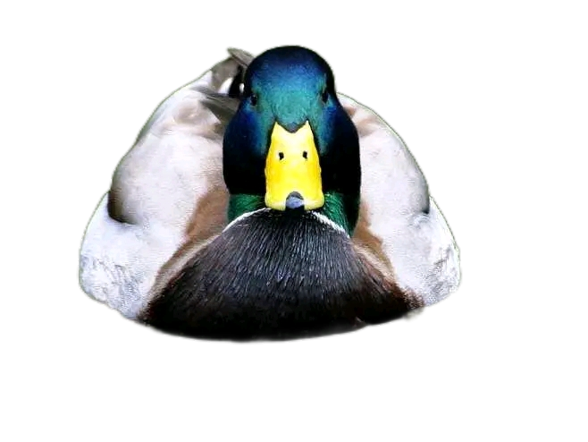
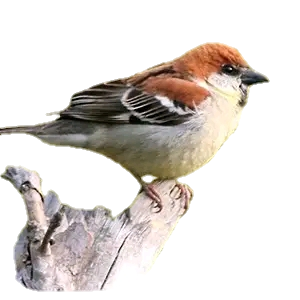
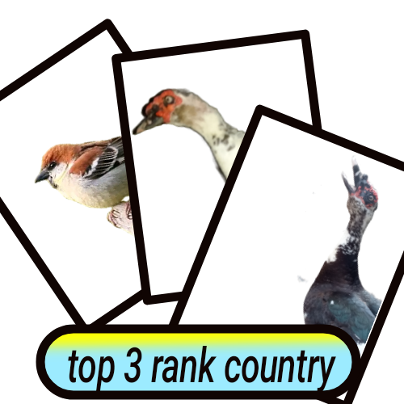

birds on rij T

the mascovy.mascovy is a duck and bird.


the duck.duck is birds.go to the website:Duck is the common name for numerous species of waterfowl in the family Anatidae. Ducks are generally smaller and shorter-necked than swans and geese, which are members of the same family.
A goose is a bird of any of several waterfowl species in the family Anatidae. this group comprises the genera Anser and Branta. Some members of the tadorninae subfamily are commonly called geese, but are not considered "true Geese" taxonomically.

the house sparrow is a bird of the sparrow family Passeridae, found in most parts of the world. It is a small bird that has a typical length of 16 cm and a mass of 24–39.5 g.

rank |
country/ragion |
Bird species count |
1 |
Colombia |
1917 |
2 |
Peru |
1892 |
3 |
Brazil |
1864 |
this is real website T.
go to the Youtube channel:
birds on rij T Youtube channel